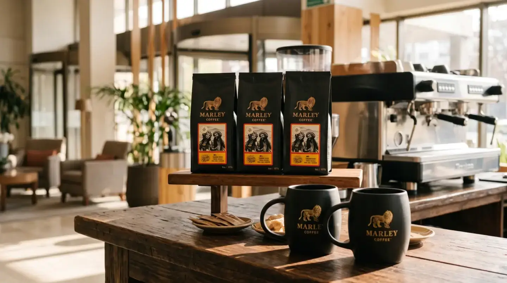

Caso práctico · Marley Coffee Empresas
¿Cómo organizar el café del desayuno en un hotel?
Revisa opciones para tu negocio con los datos de tu operación.
Ver opciones para mi negocio
¿Cómo prever la demanda del desayuno?
Estima cuántos huéspedes desayunan, cuántas tazas podrían pedir y en qué horario se concentra la atención. Con eso puedes organizar equipos, personas, insumos y reposición.
¿Cómo organizar el servicio en tres momentos?
Prepara el servicio, observa la hora punta y registra el consumo.
Ver el cálculo, los pasos y las recomendaciones
Un ejemplo para empezar
En un escenario hipotético, si esperas 50 huéspedes y calculas 1,2 tazas por persona, podrías planificar 60 tazas para el desayuno. Ajusta ambas cifras con la ocupación y los hábitos observados en tu hotel.
Fórmula: huéspedes que desayunan × tazas estimadas por persona = tazas del servicio. Es un ejemplo, no una previsión real.
Organiza el servicio en tres momentos
- Antes: revisa la previsión de huéspedes, café, leche, vasos o tazas y responsables.
- Durante: observa la hora de mayor demanda y cómo se ordena el autoservicio o la atención.
- Después: registra consumo, sobrantes y tareas de limpieza para ajustar la siguiente jornada.
Higiene y equipo
Consulta los requisitos sanitarios que correspondan a tu establecimiento y las instrucciones del fabricante del equipo. El Reglamento Sanitario de los Alimentos del Ministerio de Salud reúne las condiciones aplicables a la elaboración y manejo de alimentos en Chile.
¿Qué supuestos y preguntas conviene revisar?
Usa el cálculo como orientación y contrástalo con las condiciones de tu operación.
Ver los supuestos y límites
| Escenario | 50 huéspedes y 1,2 tazas por persona son supuestos didácticos, no datos observados. |
|---|---|
| Demanda | La ocupación, asistencia al desayuno y hora punta varían por hotel y temporada. |
| Sanidad | El establecimiento debe revisar las reglas y procedimientos que le sean aplicables. |
Ver preguntas y respuestas frecuentes
¿Cómo estimo el café para un desayuno de hotel?
Multiplica los huéspedes que desayunan por las tazas estimadas por persona y contrasta el resultado con el consumo observado.
¿Cuántas tazas toma cada huésped?
La guía no atribuye un promedio real: el ejemplo de 1,2 tazas es hipotético y debe reemplazarse con registros del hotel.
¿Qué debo planificar además del café?
Considera la hora punta, responsables, equipo, tazas, leche, reposición y las prácticas de higiene aplicables al establecimiento.
¿Qué fuentes y guías puedes consultar?
Revisa las referencias y la fecha de consulta junto con otros contenidos relacionados.
Ver fuentes y fecha de consulta
| Fuente | URL | Fecha de consulta |
|---|---|---|
| Ministerio de Salud de Chile · Reglamento Sanitario de los Alimentos | https://www.minsal.cl/reglamento-sanitario-de-los-alimentos/ | Consultado el 10 de noviembre de 2026. |
| Nespresso Professional · ficha técnica de una máquina profesional (referencia externa) | https://www.nespresso.com/shared_res/mos/free_html/au/NespressoProfessional-FactSheet/Professional_Machine_Fact_Sheet_MOMENTO_Interactive_A4.pdf | Consultado el 10 de noviembre de 2026. |